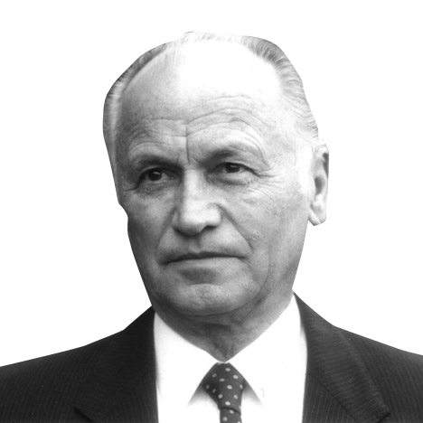
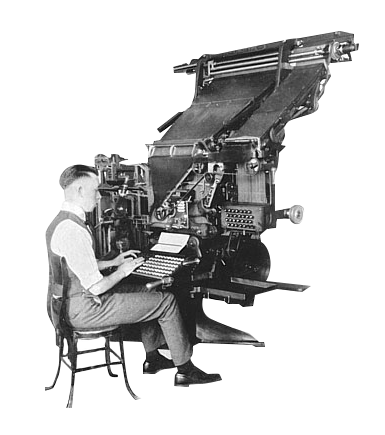
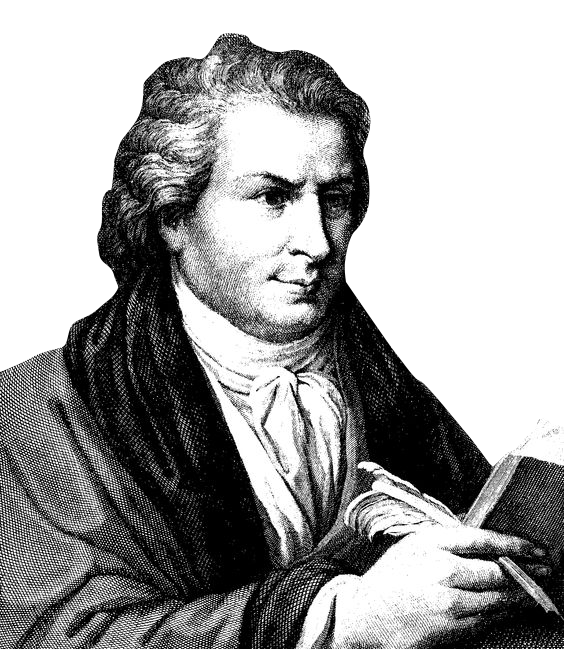
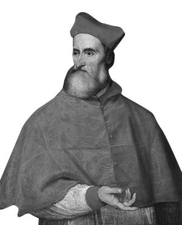
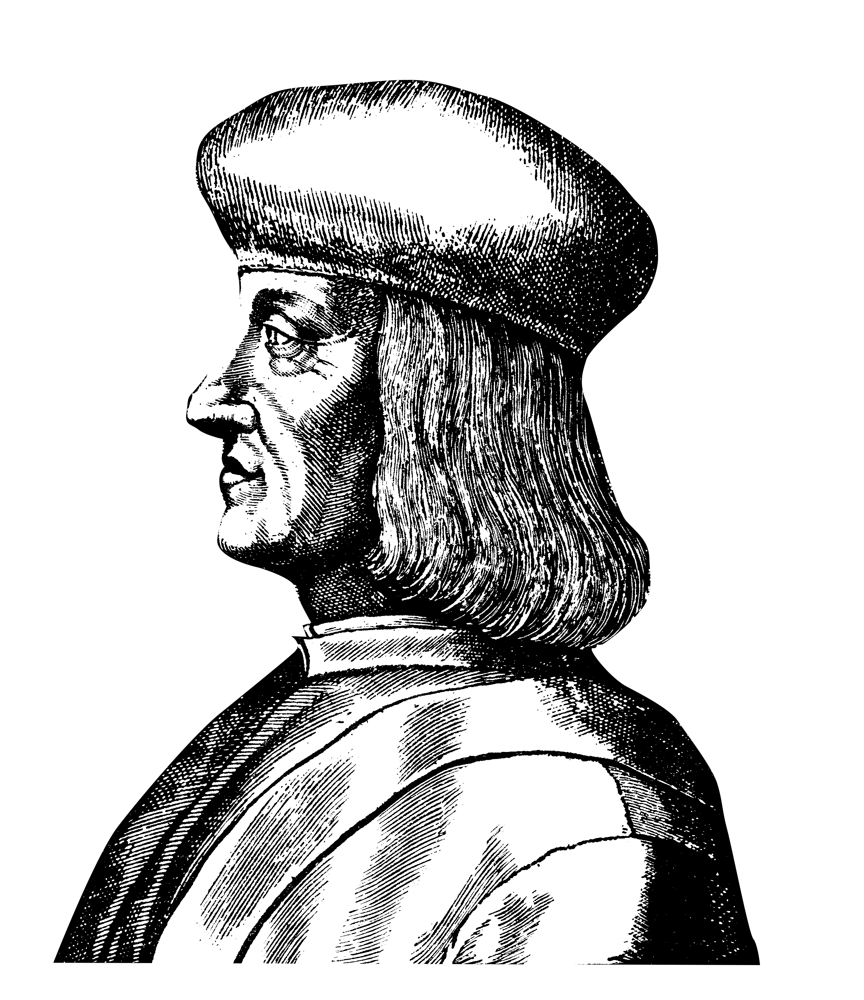

Palatino is the name of an old-style serif typeface designed by , initially released
in 1948 by the . Named after 16th century Italian master of calligraphy 
, Palatino is based on the humanist fonts of the Italian Renaissance, which mirror the letters formed
by a broad nib pen; this gives a calligraphic grace. But where the Renaissance faces tend to use smaller letters
with longer vertical lines (ascenders and descenders) with lighter strokes, Palatino has larger proportions,
and is considered to be a much easier to read typeface. It is one of several related typefaces by , each
showing influence of the Italian Renaissance letter forms. The group includes Palatine, Sistina, Michaelangelo
Titling, and Aldus, which takes inspiration from printing types cut by . 1495 in the print
shop of .